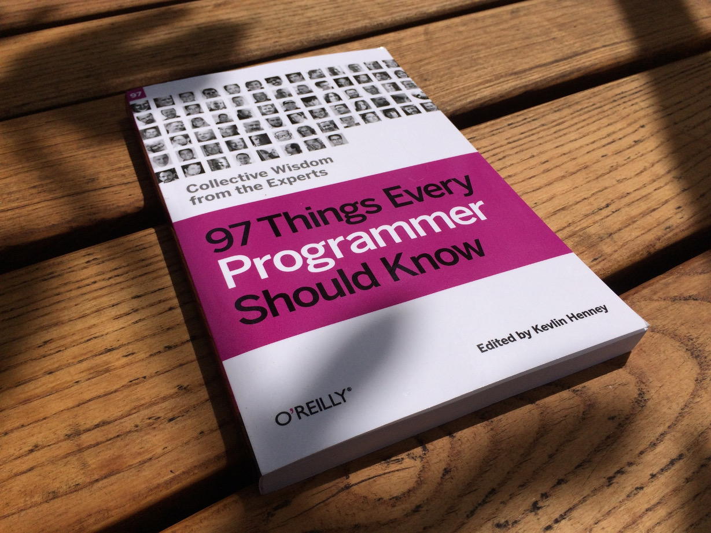

- on Sun 05 June 2016
Category: Software Engineering,
I have seen this book referenced on several occasions when the software engineering was discussed, but I never had the time to read from first page to the last. I bought the dead-tree version, which gives you a better motivation to read the whole book. Here are my comments and thoughts about each contribution in this book.

(1) Act with Prudence by Seb Rose
Technical debt is (similarly to a cash debt) a good way to kickstart the development, but I agree with the author that is should be kept under control and paid back as soon as possible. I much enjoy when a sub-optimal solution gets fixed and the worries about possible problems with it vanish away.
(2) Apply Functional Programming Principles by Edward Garson
Yes, I am already excited about this book. The functional programming principles (even in OO code) greatly improve testability of smaller components. It also gives a programmer a different insight on how algorithms work, which its a little more detached from how a classical computer works. Programming in C feels like explaining complicated science to a 7 year old ("lets have a number i, which is is set to 0. each time we will check if this number is less than some other number n..."), while programming in Haskell feels like a discussion with a philosopher ("there is this function fact for which the value for 1 is 1. - oh, i see. - and for every other positive number, the value is the argument itself multiplied by the value of function for an argument minus one. - well, this is everything i needed to know about this function, i think i know how to calculate it."
(3) Ask, "What Would the User Do?" (You Are Not the User) by Giles Colborne
This contribution is quite similar to Joel Spolsky comment on how to test the use interface: "One good way to evaluate the usability of a program or dialog you've never seen before is to act a little stupid". The important reminder to take away from this is to try being conservative with the user interface, to minimize the learning how to use your program or application.
(4) Automate Your Coding Standard by Filip van Laenen
Nicely formatted code demonstrates that the person who wrote it has put in a little effort to make it nicer and that the same person is somebody who like to keep things organized. On the contrary, when you see a messy code with sections of the code commented out, you know that there is almost surely something wrong with its behavior as well. Clearly defined language-prescribed formating standard (such as PEP8) and the tools to support it (such as pep8 tool and pylint) are much welcomed. Meanwhile, the C++ coding guidelines currently looks more like a brainstorming session (why is there std::endl if you are not supposed to use it?)
(5) Beauty Is in Simplicity by Jørn Ølmheim
Simple solution are often the ones who work better, not only in software but also in other fields, such as rock music. Trying to write the most legendary rock riff of all time? You only need 4 notes (Yngwie does not agree with this: More is more ). As an example lets look at one of the biggest code bases ever made: Linux kernel. The style itself (tabs are 8 spaces, line is 80 characters) prevent you from writing too complicated solution. The style guide for Linux kernel is a little extreme, but since the kernel should be as lean as possible it produces indisputably good results.
(6) Before You Refactor by Rajith Attapattu
This contribution is again very similar to one of Joel Spolsky's blog posts. Since reading code is harder than writing it everybody assumes that a complete rewrite will create better code. All the ugly patches in the code are actual bugfixes and the software (although with ugly code) works.
(7) Beware the Share by Udi Dahan
Using already written libraries is a nice practice, and this contribution talks about creating unwanted dependencies in the code base. The discussion here regards the internally developed libraries. The case described in this contribution can be also analyzed in terms of the time spent maintaining reusable code, something which is described in The Mythical Man-Month. Use of public (external) stable libraries should be encouraged, although I would in the controversial case of leftPad function prefer to have the leftPad function embedded directly in code.
(8) The Boy Scout Rule by Robert C. Martin
This is one of the most famous contribution in this book, I don't think there is much to add to it. It is always nice when you look back at the clean campground (I sometimes like to admire the cleanup in side-by-side diff).
(9) Check Your Code First Before Looking to Blame Others by Allan Kelly
I would also like to add that a really good understanding of the language (read the standard) and the compiler (read the manual) can help you resolve the problem without blaming the compiler. Personally I know about some miner differences between Verilog compilers from Xilinx and Altera, which could let someone think that the compiler is buggy.
(10) Choose Your Tools with Care by Giovanni Asproni
The author of this contribution mentions that he likes to isolate external tools from his own business logic. I see this approach sometimes in open source FPGA development when a wrapper around some commonly used IP cores is build (e.g. wrapper around block RAM for both Altera and Xilinx which gets chosen based on a parameter or a macro).
(11) Code in the Language of the Domain by Dan North
This contribution could be summarized as a call to use sensible variable/functions/object/methods names. This could be as well extended to writing informative comments, and not have comments like this:
if (maxLim < 0) // checks if max limit is negative
(12) Code Is Design by Ryan Brush
The abstract process of making virtual artifacts (software) from nothing cannot be compared with construction process. The possibility to experiment with the real product gives direct feedback, which can be easily incorporated into design process. I often see everyday physical objects which weren't optimized to perfection, probably because of high iteration cost. The location of power button on my HTC Desire is one of this design flaws, it cannot be reached without changing the grip on the phone.
(13) Code Layout Matters by Steve Freeman
Indentation of the code is important, it provides the overview of the complexity on the first glance. I look forward to GCC6 new warning on wrongly indented C/C++ code.
(14) Code Reviews by Mattias Karlsson
Code reviews are important because they introduce all-seeing-eye in the code writing process, and this makes programmers care more about code quality. One cannot just make a ugly patch and hide in somewhere in the code base. The ultimate code review is the release of the code to the public or to the clients. In this case one can be sure that the company will be judged by the quality of the released code. The same is true for the examples which demonstrates the use of someone own tools.
To be continued in the next blog post...